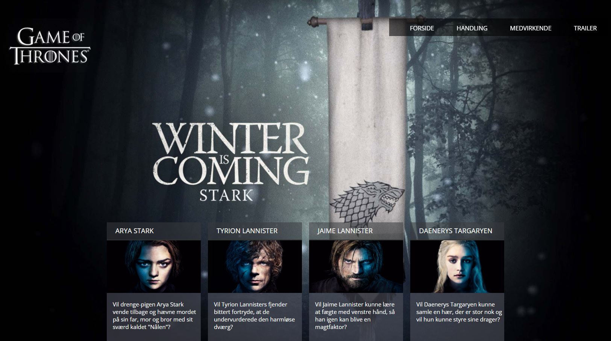
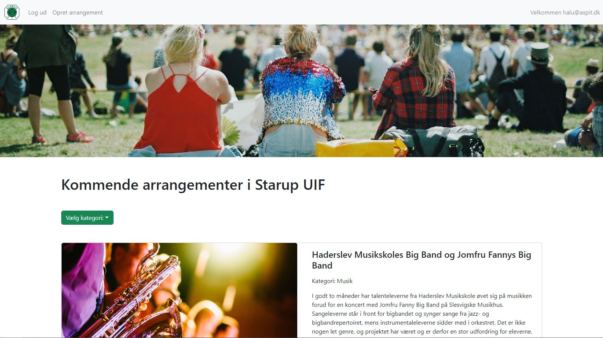

Jeg er en ung mand på 18 år, jeg bor ude omkring Sdr. Omme på landet, men er opvokset i Brande. Jeg har forskellige interesser, blandt andet software- og webudvikling, rap musik, gaming, fitness, og ikke mindst mit sociale netværk, bestående af familie og venner, og generalt de mennesker omkring mig. Jeg startede på min uddannelse AspIT i 2021, og er færdig med den i 2024. Det er også her jeg har fundet min store interesse for computer, gaming, software og webudvikling.
Som person kan man altid regne med at jeg har humøret højt. Jeg går nemmelig, uanset hvor jeg er, op i at der er god og positiv stemning, derfor bringer jeg altid et smil, humor og generel positivitet med mig. Jeg anser mig selv for at være imødekommende, ansvarsfuld, og nem at snakke med
Erfaringer
Under min tid på AspIT har jeg opnået kompetencer inden for flere forskellige områder inden for IT verdenen, såsom .NET, C# (Objektorienteret programmering med polymorfi), WPF/XAML, .NET MAUI (MVVM), Entity Framework med Unit of Work/repository pattern, REST web API m. JSON, ASP.NET, MVC, Unit Testing, MS SQL, MySQL, HTML, CSS/SCSS, Javascript, PHP, og versionsstyring med Git og GitHub.
Mine
Web Projekter

Game of Thrones
En gammel GoT side fra AspITs V2 forløb, der viser skuespillere, info og trailer
Værktøjer: HTML, CSS

Starup UIF arrangementer
Min eksamensopgave fra AspITs V3.1 forløb. Her kan der ses en oversigt over arrangementer + tilmelde sig. Med login kan man oprette og slette dem også